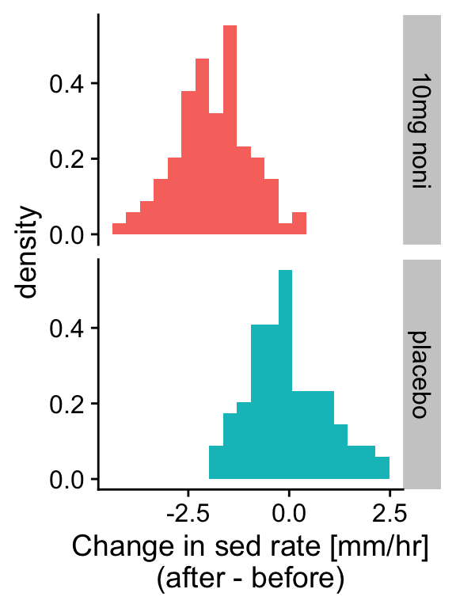
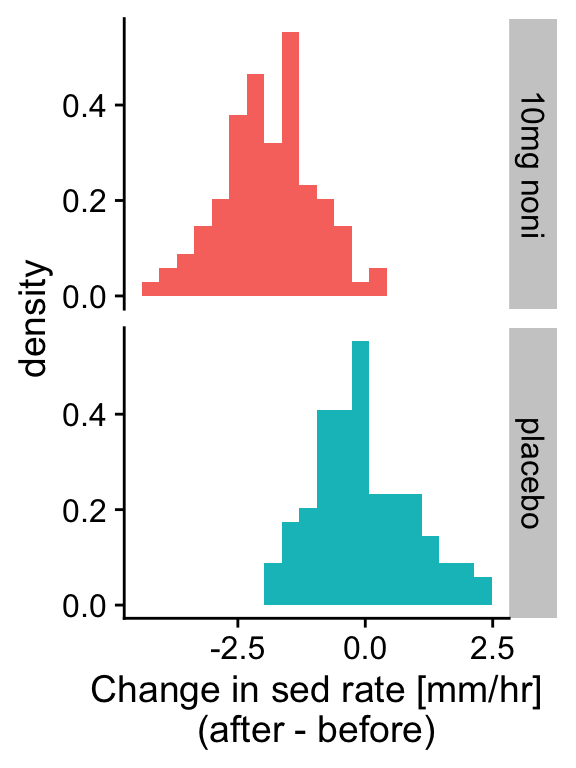
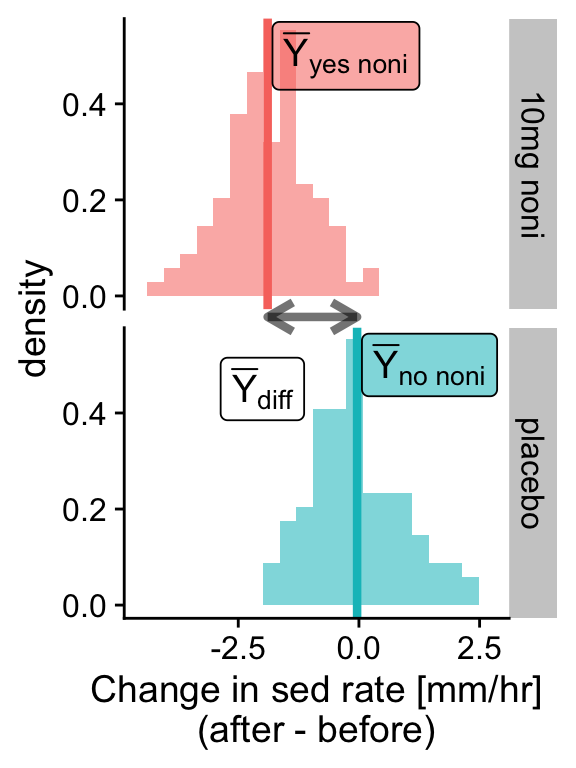
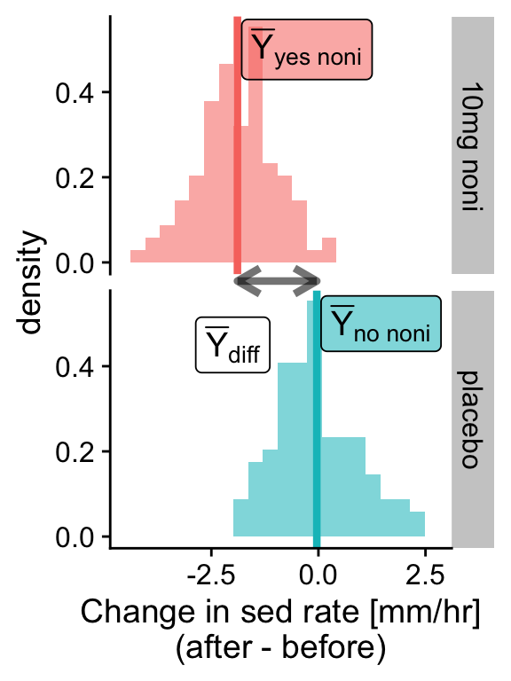
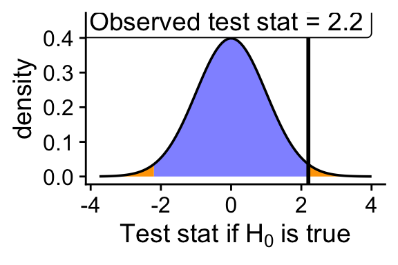
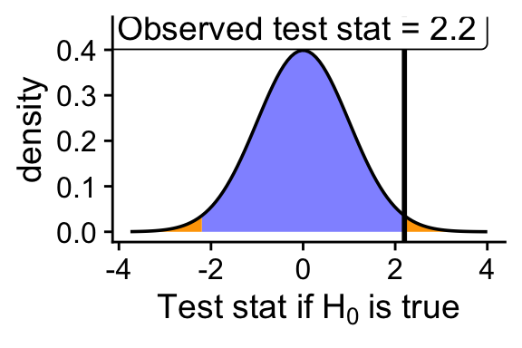
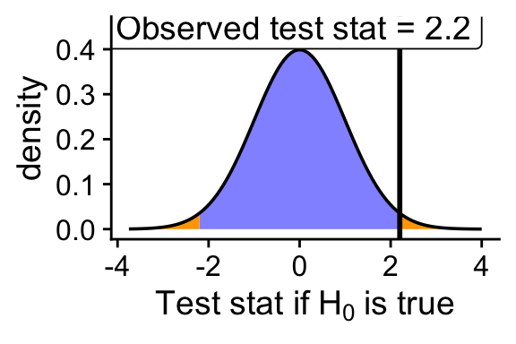
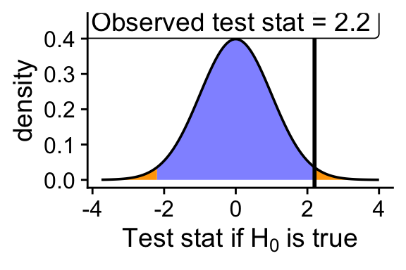
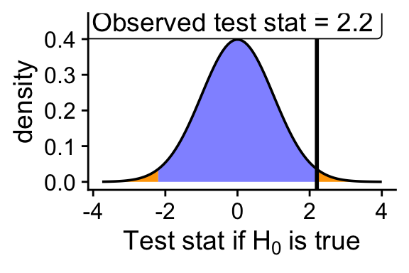
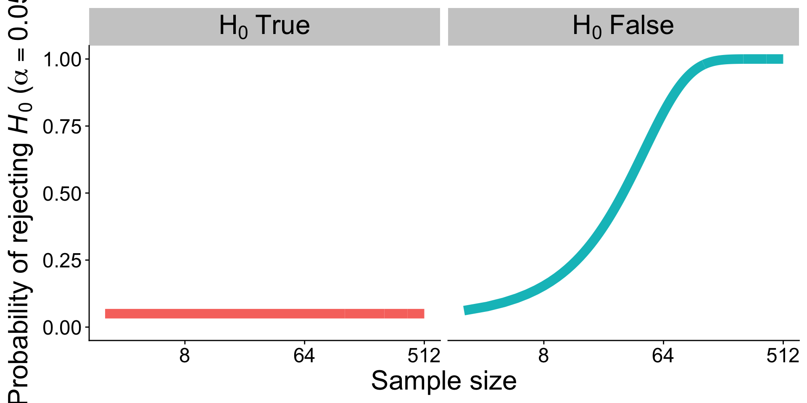

Null Hypothesis Testing
Ka hua ʻōlelo o ka lā
kilo
Kilo
Jerry Konanui on Kalo, Biodiversity, Ancient Wisdom, and Modern Science
https://www.youtube.com/watch?v=bE7K3NXFU1I&ab_channel=HawaiiSEED
Learning Objectives
This lecture:
- Identify an appropriate scientific hypothesis that addresses a biological question
- Identify an appropriate Null Hypothesis that tests a scientific hypothesis
- Identify an Alternative Hypothesis
Next lecture:
- Understand the practice of Null Hypothesis Significance Testing (NHST)
- Explain the meaning of a \(P\)-value
- Explain the concepts of false positives and false negatives and why they happen
Biology is motivated by questions about nature
Why are leaves mostly green?
How do birds fly?
What causes AIDS?
What management intervention will allow an endangered species to recover?
Scientific hypotheses posit testable explanations
Why are leaves green? Green pigments evolved to maximize photosynthetic rates.
How do birds fly? They rotate their wings to generate lift and minimize drag.
What causes AIDS? An RNA virus closely related to the chimpanzee immunodeficiency virus.
What management intervention will allow an endangered species to recover? Habitat is limiting, so habitat restoration is needed.
We test hypotheses by making predictions
If \(X\), then \(Y\)
If green pigments maximize photosynthesis, then substituting other pigments will reduce photosynthetic rate.
If the habitat restoration was successful, then the endangered species will reach its historic baseline in 10 years based on its observed growth rate in captivity.
Scientific versus statistical hypotheses
Scientific versus statistical hypotheses
Scientific and statistical hypotheses are related, but for statistical hypotheses to be useful, they must be more precise
Example: does noni help with management of inflamatory disease?
Example: does noni help with management of inflamatory disease?

Who governs data and products of research in Hawaiʻi?
United Nations Declaration on the Rights of Indigenous Peoples
Article 18: Indigenous peoples have the right to participate in decision-making in matters which would affect their rights, through representatives chosen by themselves in accordance with their own procedures, as well as to maintain and develop their own indigenous decision-making institutions.
Who gets to ask which questions, how and why?
Prof. Keolu Fox
Extra Credit!
What a 45-ish minute lecture by kumu Keolu Fox and write a response
Example: does noni help with management of inflamatory disease?

Scientific hypothesis: noni extract reduces inflammation
Statistical hypothesis: ???
- the scientific hypothesis seems supported
- but could the result just be sampling error?
Example: does noni help with management of inflamatory disease?

- What is the explanatory variable? Is it numerical or categorical?
- What is the response variable? Is it numerical or categorical?
Example: does noni help with management of inflamatory disease?

Scientific hypothesis: noni extract reduces inflammation
Statistical hypothesis: ???
- the scientific hypothesis seems supported
- but could the result just be sampling error?
We need a more precises statistical hypothesis to test whether noni is effective at reducing inflammation
Identify a Null Hypothesis
A null hypothesis is a specific statement about a population parameter made for the purposes of argument. A good null hypothesis is a statement that would be interesting to reject
A null hypothesis must be specific
The proportion of a times a fair coin lands on heads is \(\mathbf{p = 0.5}\)
There is no difference in the proportion of red M&Ms in bags sold in Safeway versus those sold at Costco
Patients in the treatment group have the same probability of contracting a disease as patients in the control group
A null hypothesis should be “interesting” to reject
This is somewhat subjective, but there are lots of trivial null hypotheses that aren’t worth studying:
For example: There are 0 trees in Hawaiʻi
This is specific, but trivially easy and uninteresting to reject
A null hypothesis should be “interesting” to reject
This is somewhat subjective, but there are lots of trivial null hypotheses that aren’t worth studying:
For example: The growth rate of native trees in Hawaiʻi are the same as their con-generic relatives from continents
This is specific, and interesting to reject
Identify an Alternative Hypothesis
The alternative hypothesis includes all other feasible values for the population parameter besides the value stated in the null hypothesis
An alternative hypothesis is not specific
The proportion of a times a fair coin lands on heads is not \(p = 0.5\)
There is a difference in the proportion of red M&Ms in bags sold in Safeway versus those sold at Costco
Patients in the treatment group have a different probability of contracting a disease as patients in the control group
Identifying null and alternative hypothesis
Example: noni

- What is the null hypothesis?
- What is the alternative hypothesis?
Naming conventions
\(H_0\): pronounced “H-naught” or “H-zero” is the convention for the null hypothesis
\(H_\mathrm{A}\):is the convention for the alternative hypothesis
So…
\(H_0\): Mean difference (after - before) in sedimentation rate for the group receiving noni and the placebo group will be identical
\(H_\mathrm{A}\): Mean difference (after - before) in sedimentation rate for the group receiving noni and the placebo group will be different
Naming conventions
\(H_0\): Mean difference (after - before) in sedimentation rate for the group receiving noni and the placebo group will be identical
\(H_\mathrm{A}\): Mean difference (after - before) in sedimentation rate for the group receiving noni and the placebo group will be different
Break!
Learning Objectives
Last lecture:
- Identify an appropriate scientific hypothesis that addresses a biological question
- Identify an appropriate Null Hypothesis that tests a scientific hypothesis
- Identify an Alternative Hypothesis
This lecture:
- Understand the practice of Null Hypothesis Significance Testing (NHST)
- Explain the meaning of a \(P\)-value
- Explain the concepts of false positives and false negatives and why they happen
Identify a Null Hypothesis
A null hypothesis is a specific statement about a population parameter made for the purposes of argument. A good null hypothesis is a statement that would be interesting to reject
A null hypothesis must be specific and should be “interesting” to reject
For example:
There are 0 trees in Hawaiʻi
This is specific, but trivially easy and uninteresting to reject
A null hypothesis must be specific and should be “interesting” to reject
For example:
The growth rate of native trees in Hawaiʻi are the same as their con-generic relatives from continents
This is specific, and interesting to reject
Identify an Alternative Hypothesis
The alternative hypothesis includes all other feasible values for the population parameter besides the value stated in the null hypothesis
An alternative hypothesis is not specific
For example:
The growth rate of native trees in Hawaiʻi are different than their con-generic relatives from continents
Naming conventions
\(H_0\): pronounced “H-naught” or “H-zero” is the convention for the null hypothesis
\(H_\mathrm{A}\):is the convention for the alternative hypothesis
Identifying null and alternative hypothesis
Example: noni

- What is the null hypothesis?
- What is the alternative hypothesis?
- \(H_0\): The mean of change in sedimentation rate is the same across the two groups
- \(H_A\): The mean is not the same
Null Hypothesis Significance Testing
What is Null Hypothesis Significance Testing?
Null Hypothesis Significance Testing
What is Null Hypothesis Significance Testing? It asks the question:
What would be the probability of observing the sample estimate, or a more extreme estimate, if the null hypothesis were true?
If that probability is small, we say “we reject the null hypothesis”
If that probability is not small, we say “we fail to reject the null hypothesis”
Null Hypothesis Significance Testing
What is Null Hypothesis Significance Testing? It asks the question:
What would be the probability of observing the sample estimate, or a more extreme estimate, if the null hypothesis were true?
The sample estimate of interest depends on the scientific and null hypotheses
Null Hypothesis Significance Testing
The sample estimate of interest depends on the scientific and null hypotheses

- \(H_0\): The mean of change in sedimentation rate is the same across the two groups
- \(H_A\): The mean is not the same
- The estimate of interest:
\(\bar{Y}_\text{diff} = \bar{Y}_\text{yes noni} - \bar{Y}_\text{no noni}\)
Null Hypothesis Significance Testing
What would be the probability of observing the sample estimate, or a more extreme estimate, if the null hypothesis were true?
When doing Null Hypothesis Significance Testing, the specific sample estimate we use is called a test statistic
Here we decided the test statistic is \(\bar{Y}_\text{diff}\)
Null Hypothesis Significance Testing
What would be the probability of observing the sample estimate, or a more extreme estimate, if the null hypothesis were true?
How do we get the probability distribution of the test statistic?
Null Hypothesis Significance Testing
In many many many hypothetical repeated studies, where the null hypothesis is TRUE, what would be the distribution of test statistics?
From that sampling distribution of test statistics, we can calculate the probability of observing the test statistic, or a more extreme value
Simulating a sampling distribution of the test statistic under the null hypothesis
“The Null Distribution”
Simulating the null distribution
# repeatedly shuffle the groups to make a null distribution
all_null <- replicate(1000, {
noni_null <- noni_dat
noni_null$group <- sample(noni_null$group)
ybars_null <- group_by(noni_null, group)
ybars_null <- summarize(ybars_null, ybar = mean(sed))
test_stat_null <- diff(ybars_null$ybar)
test_stat_null
})Simulating the null distribution
Simulating the null distribution
Simulating the null distribution
Simulating the null distribution
In many many many hypothetical repeated studies, where the null hypothesis is TRUE, what would be the distribution of test statistics?
From that sampling distribution of test statistics, we can calculate the probability of observing the test statistic, or a more extreme value
That probability is:
This probability has a special name: the p-value
Null Hypothesis Significance Testing
Null Hypothesis Significance Testing asks the question:
What would be the probability (the p-value) of observing the test statistic, or a more extreme value, if the null hypothesis were true?
If the p-value is small, we say “we reject the null hypothesis”
If the p-value is not small, we say “we fail to reject the null hypothesis”
How small is small enough?
Null Hypothesis Significance Testing
How small of a p-value is small enough?
Answer: depends on the desired significance level
- we write the significance level as \(\alpha\)
- in biology, \(\alpha\) is often 0.05
- remember 95% Confidence Intervals? Same thing as \(\alpha = 0.05\)
Can we reject the null?

- \(H_0\): The mean of change in sedimentation rate is the same across the two groups
- Test statistic: \(\bar{Y}_\text{diff} = \bar{Y}_\text{yes noni} - \bar{Y}_\text{no noni}\)
- Test statistic: \(\bar{Y}_\text{diff} =\) 1.85
- P-value: 0
Yes! At significance level \(\alpha = 0.05\), we reject the null that noni has no impact on sedimentation rate
Null Hypothesis Significance Testing: the steps
- State \(H_0\) and \(H_A\)
- Calculate the test statistic
- Generate the null distribution
- Calculate the p-value
- Decide:
- Reject \(H_0\) if the p-value is less than or equal to \(\alpha\) (\(p \le \alpha\))
- Fail to reject \(H_0\) if p-value is greater than \(\alpha\) (\(p > \alpha\))
Null Hypothesis Significance Testing: frequent questions
Here is a more typical null distribution and test statistic:

Null Hypothesis Significance Testing: frequent questions

The p-value is the sum of the probabilities in the two orange regions
Question: If the test statistic = -2.2, why is the p-value the sum of both orange regions”
- Because \(H_0\) is no difference, and \(H_A\) is any difference, not distinguishing between positive or negative differences
- This type of alternative hypothesis is called a “two tailed” test
Null Hypothesis Significance Testing: frequent questions

The p-value is the sum of the probabilities in the two orange regions
Question: Why is the p-value the probability of “the test statistic or a more extreme value”?
Null Hypothesis Significance Testing: frequent questions

The p-value is the sum of the probabilities in the two orange regions
Question: Why is the p-value the probability of “the test statistic or a more extreme value”?
- Because if the null distribution is continuous, the probability of the exact test statistic will be 0!
Null Hypothesis Significance Testing: frequent questions

The p-value is the sum of the probabilities in the two orange regions
Question: If we reject \(H_0\) at significance level \(\alpha = 0.05\)? Does that mean our alternative hypothesis is true?
Null Hypothesis Significance Testing: frequent questions

The p-value is the sum of the probabilities in the two orange regions
Question: If we reject \(H_0\) at significance level \(\alpha = 0.05\)? Does that mean our alternative hypothesis is true?
- NO! Just that we reject the null at \(\alpha = 0.05\)
- Also we might have incorrectly rejected the null!
Errors in hypothesis testing
There are two types of errors in hypothesis testing
Rejecting the null hypothesis when it’s true (false positive)
Not rejecting the null hypothesis when it’s false (false negative)
False positive
False positive: Rejecting a true null
- This happens with probability \(\alpha\)
- Pr[False Positive] is independent of sample size
- Called a “Type I error”
You can decrease your false positive rate by decreasing \(\alpha\)
False negative
False negative: Failing to reject a false null
- Pr[False Negative] depends on sample size, effect size, and precision
- Also called a “Type II error”
Pr[False Negative] = 1 - statistical power
You can decrease your false negative rate by increasing \(\alpha\)
You can increase statistical power by increasing your sample size and measurement precision
Errors
| Decision | \(H_0\) True | \(H_0\) False |
|---|---|---|
| Reject \(H_0\) | Type I | no error |
| Do not reject \(H_0\) | no error | Type II |
lower \(\alpha\) reduces Type I error rate, but raises Type II error rate
both are errors! many methods today choose \(\alpha\) to minimize all error, but this is complex.
Effects of sample size
If \(H_0\) is true, sample size has no effect
If \(H_0\) is false, statistical power increases with sample size
